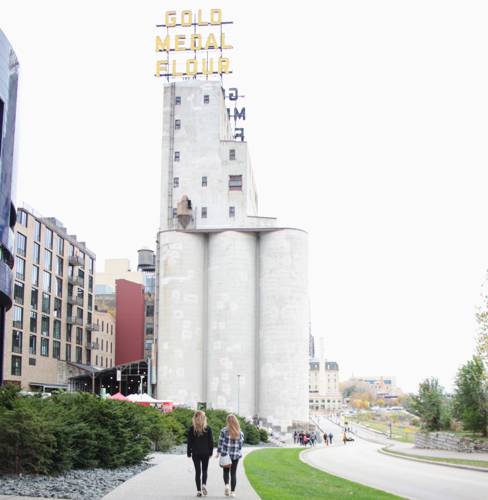

Hello! I'm Rachel Jacobsen and I attend North Dakota State University! I study in the Master's Program for Architecture
and am minoring in Web Design. While I'm not at school or doing homework, you can find me
at my job at Mint + Basil right here in downtown Fargo! I obviously have
a passion for design and aesthetics! Some of my other interests include being outside, playing with my dog, and hanging out with my husband.
Hopefully this website has given you some more insight into who I am, my architectural design style, my art, and my web design
and coding skills!